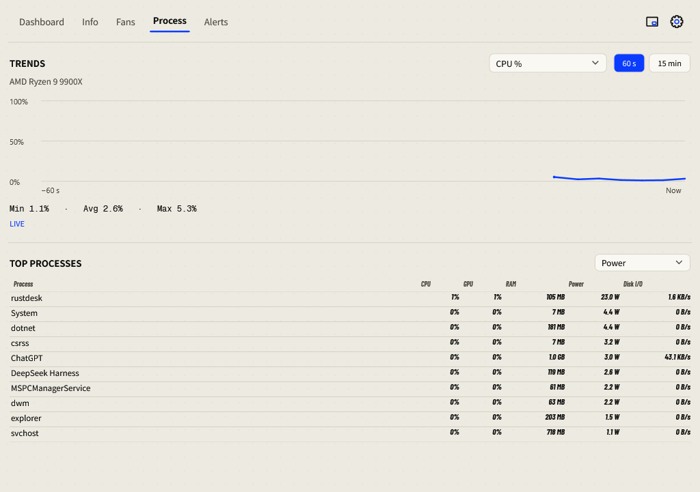
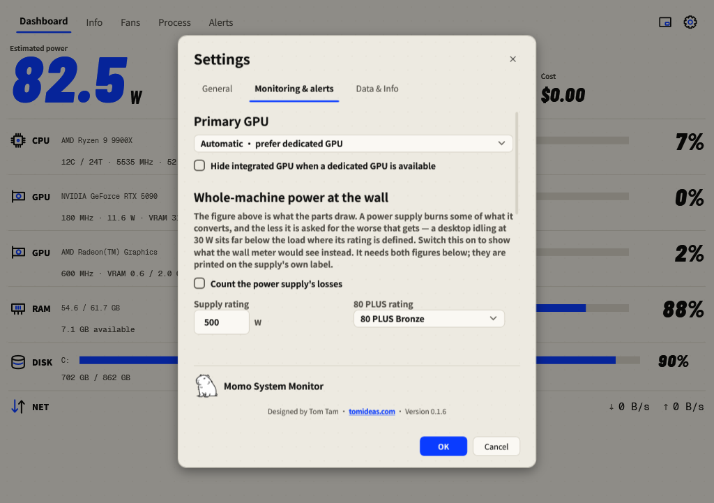

Quick start
A visual walkthrough from your first launch to a useful everyday monitoring setup.
Follow the English interface
Use the next and previous buttons to work through the screenshots at your own pace. Each step names the control and the expected result.
1. Choose English and your appearance
Open the gear at the top right. In General, choose Language → English and Background → Paper Pop (light) or Volt (dark). Press OK to save. Cancel discards the draft.

2. Check the Dashboard
Read the wattage label first, then the CPU, GPU and RAM percentages. The DISK bars show used capacity. A dash means a reading is unavailable; see Troubleshooting if an expected sensor stays missing.

3. Inspect a busy process
Select RAM on the Dashboard to open memory trends and memory-ranked processes, or open Process directly. Select a metric and a 60-second or 15-minute range. Wait for samples to arrive.

4. Review alert thresholds
Open Settings → Monitoring & alerts. Choose your primary GPU and thresholds, then press OK. To inspect incidents, open the separate Alerts page.

5. Switch to the Mini panel
Use the Mini button beside the gear. Drag the panel to a convenient position. Double-click its background or select Open Dashboard to return. Set always-on-top behavior in General.

Finish your setup
- In General, select your Country / Region. Check the electricity price, currency and carbon intensity; use your own rates if needed.
- Keep Fans → Auto until you have confirmed which hardware each fan belongs to.
- Enable Keep running in the tray when closed or minimized if you want background monitoring.
- Open Settings → Data & Info and check for storage warnings.